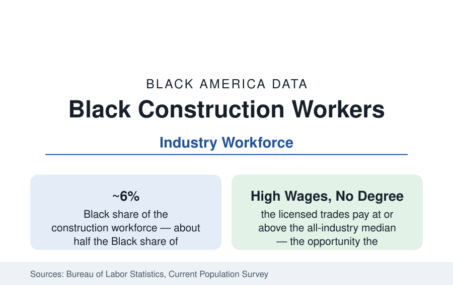

Black Employment
Black Workers in Construction and the Building Trades: The Apprenticeship Gate
Black workers form about six percent of the construction workforce — half their share of employment — in an industry built on apprenticeship gates. The BLS and trades data.

Construction employs roughly 700,000 to 800,000 Black workers — about six percent of its workforce, barely half the Black share of overall employment — in the industry that builds everything this reference describes. The trades are the classic route to middle-class wages without a degree, and their gate is the apprenticeship: a multi-year, sponsor-controlled pipeline whose demographics explain the workforce's. This article reports the construction data.
The Segments: Laborers Up, Crafts Thin
The CPS occupation-by-industry tables show the internal shape plainly. Black construction workers concentrate in the laborer and helper occupations (where their share approaches or exceeds the employment average) and in the highway and heavy-civil segments, and thin out through the licensed crafts — electricians, plumbers and pipefitters, carpenters, operating engineers — where Black shares run in the low-to-mid single digits and the wages run highest. Residential construction (nonunion in most markets) shows higher Black participation than the unionized commercial and industrial segments in several regional series, at lower and less stable compensation — the two construction labor markets (union commercial, open-shop residential) have measurably different demographics and different economics, and the workforce total blends them. The contractor layer mirrors the workforce: Black-owned construction firms are among the largest categories of Black employer businesses (the business profile), operating predominantly in the subcontractor tier.
The Apprenticeship Gate
Entry to the licensed crafts runs through apprenticeship — union joint apprenticeship training committees (JATCs) and open-shop programs — whose admissions are the file's documented bottleneck: competitive processes weighted by sponsorship, prior experience (itself allocated by network), and test-and-interview rankings, graduating classes whose demographics the trades' own reporting tracks. The historical record is unusually litigated: the building trades were the subject of the era's defining court and consent-decree battles (the 'Philadelphia Plan' of 1969 — the original federal affirmative-action mechanism — was a construction plan, setting minority hiring goals on federal projects in that city), and the decree-era gains and their post-decree erosion are both in the compliance data. The current pipeline programs — pre-apprenticeship (the community-based programs feeding JATC classes, whose completion-and-placement data the providers publish), the community-college trades programs, and the reentry-to-trades channel for returning citizens — exist on this file, and their placement rates into registered apprenticeships are the gate's current measurement.
Wages, Projects, and the Public Money
The compensation data state the stakes: journey-level licensed tradespeople earn at or above the all-industry median with the union package (pension, health, the annuity structures) on top — construction is the highest-wage large industry without a degree gate. Black construction workers' median earnings run below the industry median on the occupational distribution. The industry's demand is substantially public — infrastructure, transit, schools, the energy build-out — which is why the workforce file is a policy file: federal and state infrastructure programs carry workforce goals, registered-apprenticeship requirements, and (in the recent legislation) explicit local-hire and underrepresented-worker provisions whose compliance data are reported project by project. The infrastructure decade now underway is, in the workforce literature's framing, the largest construction labor demand since the interstates — and the apprenticeship classes being admitted now determine who builds it.
Safety, Seasonality, and the Body's Ledger
Construction's other data are physical. The injury and fatality tables record construction among the most dangerous industries, with Black workers' fatality rates running above the industry average in the BLS census of fatal injuries in several recent years — the laborer concentration and the residential segment's enforcement thinner-ness both implicated — and the occupational-health literature adds the cumulative ledger (musculoskeletal, respiratory, heat) that lands in the disability and early-retirement data of the older construction workforce. Seasonality and cyclicality complete the economics: construction unemployment spikes first and hardest in recessions, and the Black construction workforce — last hired in the cycle's terms — records the segment's deepest swings in the CPS recession series.
Reading the Construction Data
Construction is the employment section's clearest gate story: an industry at six percent where the overall workforce is thirteen, not for want of applicants but because its front door is a sponsorship pipeline built a century ago. The infrastructure era's classes are filling now, in every state, and the apprenticeship data of the next decade will record whether the gate widened while the work was there.
More in Black Employment
The Black Unemployment Rate: The Two-to-One Pattern
Black unemployment runs at roughly twice the White rate — 5.5 percent against 3.3 percent in annual averages — a ratio stable across five decades of federal data. How it is measured and why it persists.
Black Median Weekly Earnings: The 80-Cent Ratio
Black full-time workers earn a median of about $900 a week — roughly 80 cents for every dollar White workers earn. The BLS earnings data by group, gender, and occupation.
Black Labor Force Participation: Working at National Rates
Black labor force participation runs at roughly the national rate — and Black women participate at higher rates than White women. The BLS participation data.
Source: U.S. Bureau of Labor Statistics, Current Population Survey; Joint Center for Political and Economic Studies trades research; Building Trades union data; Associated General Contractors workforce series.